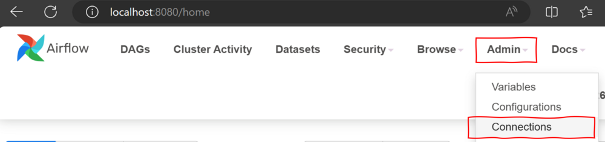
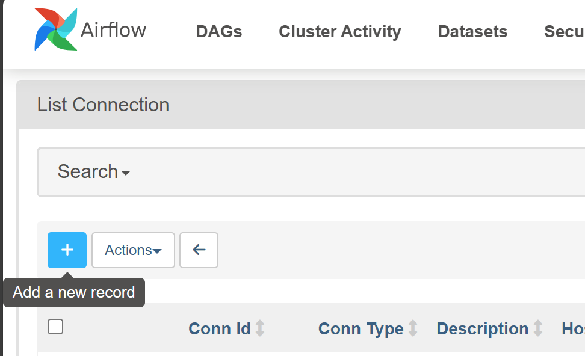
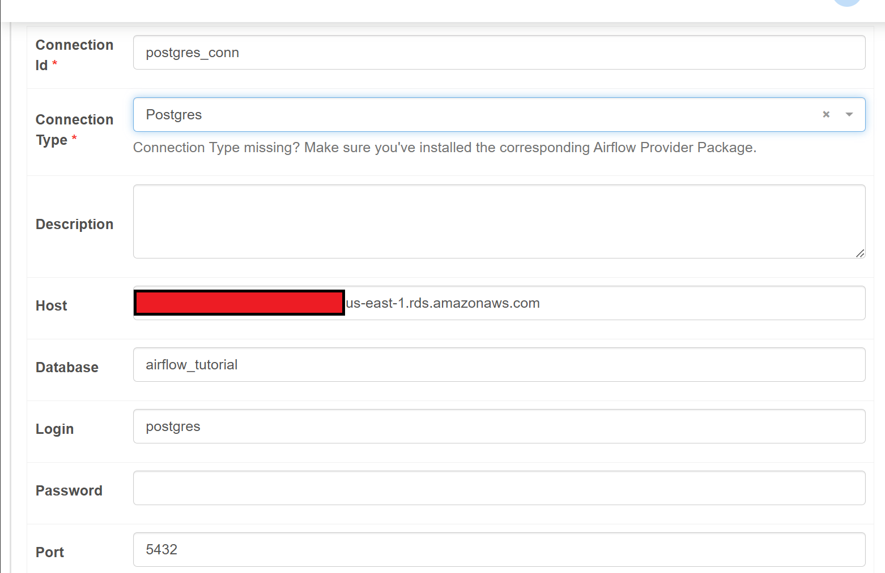

Okay, enough with the boilerplate. Let’s move on to the code that defines the actions that our DAG will execute.
Reading Input Files from S3
The first function is read_combines_new_files_from_s3. As its name hints, it aims to retrieve and merge any new CSV files found in the S3 bucket where we’re storing our input data. The definition of new file for these purposes is any file whose modification date is later than the last successful run of the DAG.
Here are the first lines of the function and their explanation:
def read_combines_new_files_from_s3(**kwargs):
objects = s3.list_objects_v2(
Bucket=bucket_name,
Prefix='input_data/')['Contents']
s3.list_objects_v2 is a function that returns a dictionary with information about the objects in our bucket (not the objects themselves). We use the arguments Prefix to retrieve just the objects within the input_data/ directory of the bucket.
From this dictionary, we access 'Contents' to keep only the information pertinent to the individual, discarding a bunch of metadata that is not relevant for our function.
You may wonder what the **kwargs is for. In Python, it serves as a placeholder for handling multiple arguments passed in a key-value pair format (kwargs = Keyworded Arguments). Within Airflow, it is used by the PythonOperator to pass custom arguments and relevant context to the callable functions. We’ll see an example of this later!
# Find the last successful run of the current DAG
dag_runs = DagRun.find(dag_id='transform_and_upsert', state='success')
if len(dag_runs) > 0:
# Use the execution date of the last successful run
last_dag_run_date = dag_runs[-1].execution_date
else:
# If this is the first run, or no successful runs, use a date far in the past
last_dag_run_date = datetime(2000, 1, 1, tzinfo=timezone.utc)
print('Last dag run date: ', last_dag_run_date)
Now, we use the find() method from the DagRun class to query all the successful executions of our current DAG, and we save them in the dag_run variable.
Then, we ask whether there are any successful runs at all (len(dag_runs) > 0?). This is to handle the case where the pipeline has never run before and thus lacks a last execution_date. We handle this by setting a fallback last_dag_run_date way back in the past (1st January 2000). In practice, this will cause any file in the S3 bucket to be considered as a new file.
When there are previous successful runs, we just retrieve the execution_date attribute from the last one with dag_runs[-1].execution_date. Here, dag_runs[-1] uses Python’s negative indexing to access the last element of dag_runs.
Also, notice that there is a print() statement at the end, which I added for debugging purposes (it is not really necessary). We can view the output of print statements like this in the Logs section of the Airflow Web UI. I’ll show you how to do that in the conclusion of this article.
# Reading the objects that are more recent than last_dag_run_date into a Pandas DataFrame
dfs = []
df_combined = None
for obj in objects:
print('Last modified object: ', obj['LastModified'])
if obj['LastModified'] > last_dag_run_date:
dfs.append(read_csv(f's3://{bucket_name}/' + obj['Key']))
if len(dfs) > 0:
df_combined = concat(dfs, axis=0)
df_combined.to_csv(f's3://{bucket_name}/intermediate_data/df_combined.csv', index=False)
return True
else:
return False
Then, having the list of input files from the bucket (objects) and the last_dag_run_date, we proceed to read into a pandas DataFrame all the files that are more recent than this date. We do this by:
Iterating through each file (‘obj’) in the list objects.
Checking its ['LastModified'] attribute. If the CSV file was modified after the last_dag_run_date, it’s read and appended to the dfs list, using the obj['Key' to access it.
If any new files were found, the DataFrames in dfs are combined (concat) into a single df_combined. This DataFrame is saved as a CSV file in the /intermediate_data directory of our S3 bucket. The function ends returning a True value (why? explanation to come!).
If no new files were found, no further action is performed and the function returns False.
UPSERT to PostgreSQL Database on Amazon RDS
We’re now reaching the last part of our pipeline. At this point, the data already has the desired structure: each row represents a single day, and each column represents the time (in minutes) spent on each kind of project: either Paid work (work_minutes) or Learning (learning_minutes).
![A flowchart illustrating a data processing workflow using Apache Airflow, AWS S3, and AWS RDS. It begins with ‘Raw Data’ containing project details in an S3 bucket, processed by Apache Airflow. Steps include reading raw CSV from S3, performing pivot transformation, and upserting transformed data to AWS RDS. The final output is stored in an Amazon RDS Database as a ‘Final Table’ with fields for date, work_minutes, and learning_minutes. A note ‘We are here’ indicates the current step in the process.](images/data_pipeline_upsert_focus.png)
The only step left to code is the UPSERT operation to our PostgreSQL database, so let’s go ahead with that!
def upsert_df_to_rds(**kwargs):
db_instance_identifier = 'airflow-postgres'
s3_file_path = f's3://{bucket_name}/intermediate_data/df_pivoted.csv'
dtype_spec = {'work_minutes': 'float', 'learning_minutes': 'float'}
df = read_csv(s3_file_path, dtype=dtype_spec, parse_dates=['Start date'])
Here, we begin by initializing the variables required to talk to the database and S3: the db_instance_identifier of our database, and the s3_file_path of the file with the transformed data.
Then, we read_csv the data from S3, taking some extra precautions to ensure the file is parsed using the same data types as the destination table in PostgreSQL.
For the numerical columns, we specify the correct data types in the dictionary dtype_spec and pass it to the argument dtype.
For the Start date column, we ask read_csv to parse it as date using the parse_dates argument.
Then, there is a bunch of code whose only purpose is to minimize AWS costs by enabling public accessibility of the PostgreSQL database only when required by the DAG execution.
# Change Database PubliclyAccessible to True
rds.modify_db_instance(
DBInstanceIdentifier=db_instance_identifier,
PubliclyAccessible=True,
ApplyImmediately=True
)
# This change takes some time to be applied, so we need to wait a bit
elapsed_time = 0
timeout = 300
interval = 30
is_public = False
while elapsed_time < timeout:
try:
db_instances = rds.describe_db_instances(DBInstanceIdentifier=db_instance_identifier)
db_instance = db_instances['DBInstances'][0]
is_public = db_instance['PubliclyAccessible']
if is_public == True:
print(f"RDS instance '{db_instance_identifier}' public accessibility is now {is_public}.")
time.sleep(40)
break
else:
print(f"Waiting for RDS instance '{db_instance_identifier}' to become {'publicly accessible' if True else 'private'}. Checking again in {interval} seconds.")
time.sleep(interval)
elapsed_time += interval
except Exception as e:
print(f"An error occurred: {e}")
break
if not is_public:
print(f"Timeout reached: RDS instance '{db_instance_identifier}' did not reach the desired state within {timeout} seconds.")
# Exit task
return
The goal here is to keep the time we use a Public IP for our database to a minimum because exposing a Public IP address is the only AWS resource in this tutorial that is not covered by the AWS Free Tier.
To achieve this, our database will be PubliclyAccessible=False most of the time, but the upsert_df_to_rds function will change this property to True when needed.
We ask to ApplyImmediately this change, but it may still take some time to take effect. Therefore, we set up a while loop that checks every interval of 30 seconds if the database is already publicly accessible. Once db_instance['PubliclyAccessible'] is True, we exit the loop and proceed with the UPSERT operation. Later, when the UPSERT is completed, the function will set PubliclyAccessible to False again.
Note that none of the code above is essential. If you’re willing to pay the cost of having a Public IP address available all the time (which is not that much), you can skip the above chunk from your DAG.
# Get the RDS connection using PostgresHook
rds_hook = PostgresHook(postgres_conn_id='postgres_conn')
The next step is to create a hook to our Postgres database. In Airflow, a hook is like a bridge that allows our DAGs to interact with external systems and services.
Here, we create the rds_hook using the class constructor PostgresHook. This constructor asks for the argument postgres_conn_id, which is the name of a connection to PostgreSQL created in the Airflow Web UI. We have a problem here because we haven’t created any connections there yet, so let’s go back to localhost:8080 to set this up.
On the Airflow UI, go to Admin and then to Connections.

Then click on the light blue ‘+’ button (Add a new record).

And then fill out the details of the new connection. If you followed the instructions of the Setting Up AWS Resources section, then you can use the same values as the ones shown on the screenshot below, except for Host, Password and Port. The values for these parameters should be available on your Terminal as variables named ENDPOINT_URL (Host), PORT and MY_PASSWORD. Print them with the following Terminal commands:
echo $ENDPOINT_URL
echo $PORT
echo $MY_PASSWORD
And paste them on the corresponding sections of the Edit Connection page. Also, take care of removing any text present in the Extra field (below Port), as it may cause problems when connecting to the database.

Then we Save the connection and we’re done! An Airflow Connection with Id postgres_conn now exists, so rds_hook= PostgresHook(postgres_conn_id='postgres_conn') should run without any issues when our DAG is executed.
Going back to the upsert_df_to_rds function, we meet again our old friend kwargs.
# Get the table name and schema from the parameters
table = kwargs['params']['table']
schema = kwargs['params']['schema']
# Create a temporary table with the same structure as the target table
rds_hook.run(f"CREATE TEMPORARY TABLE tmp_{table} (LIKE {schema}.{table});")
But this time it plays a different role. We’re not using it to access the task instance object, but to retrieve parameters. These parameters can be passed to a Python function by the PythonOperator that executed the function. In this case, the Operator that calls upsert_df_to_rds is passing two parameters: table and schema (the code where that happens will be shown in a moment!).
These parameters, as you may guess, correspond the the name and schema or the destination table for our data, within the Postgres database.
After retrieving the parameters, we use them to create a temporary table that has the same columns and data types as the final destination table, but adding the prefix tmp_ to its name. The purpose of this temporary table is to facilitate the UPSERT operation in SQL, as we’ll see in a moment.
# Insert the dataframe into the temporary table using to_sql method
df.to_sql(
f"tmp_{table}",
rds_hook.get_sqlalchemy_engine(),
schema=schema,
if_exists='replace',
index=False)
Then, we use the to_sql method from pandas to insert df (which is the transformed data output by pivoting_df) into the temporary table we just created. This method requires the following arguments:
f"tmp_{table}" is the name of the temporary table.rds_hook.get_sqlalchemy_engine() is a method that returns a SQLAlchemy engine object, which is required by to_sql to connect to the database.schema=schema specifies the schema where the table is located.if_exists='replace' tells to_sql to replace the table if it already exists.index=False avoids writing the DataFrame index to the table.
And then we have it 🥁🥁🥁🥁:
✨ the UPSERT operation ✨✨
# Perform the upsert by merging the temporary table with the target table on the date column
rds_hook.run(f"""
INSERT INTO {schema}.{table}
SELECT * FROM tmp_{table}
ON CONFLICT (date) DO UPDATE SET
work_minutes = EXCLUDED.work_minutes,
learning_minutes = EXCLUDED.learning_minutes;
""")
Let’s understand what’s going on here:
INSERT INTO: We use this statement to insert the data from the temporary table (tmp_{table}) into the target table ({schema}.{table}).ON CONFLICT (date): This clause tells PostgreSQL to expect potential conflicts based on our Primary Key: the date column. If a row being inserted has the same date as an existing row, PostgreSQL will follow the instructions in the DO UPDATE clause instead of inserting a duplicate.DO UPDATE SET ...: This clause specifies how to resolve the conflict. We update the work_minutes and learning_minutes columns in the existing row with the corresponding new values from tmp_{table}.EXCLUDED: Represents the row from tmp_{table} that would have been inserted if there were no conflict on the date column. Therefore, we can use EXCLUDED.column_name to update work_minutes and learning_minutes with the corresponding values from the temporary table.
To conclude, we delete any temporary objects and resources that are no longer needed.
# Drop the temporary table
rds_hook.run(f"DROP TABLE tmp_{table};")
# Remove df_pivoted.csv from S3
file_key = 'intermediate_data/df_pivoted.csv'
s3.delete_object(Bucket=bucket_name, Key=file_key)
# Set PubliclyAccessible=False to save money
rds.modify_db_instance(
DBInstanceIdentifier=db_instance_identifier,
PubliclyAccessible=False,
ApplyImmediately=True
)
Specifically, we:
DROP the temporary table used for the UPSERT since the new data is already available in the final table.s3.delete_object() the df_pivoted.csv that contained the new data.- Disable public accessibility for the database instance (
PubliclyAccessible=False) to reduce costs by removing the no longer required Public IP address.
{{% subscribe %}}
![Flowchart depicting a data processing workflow with Apache Airflow, AWS S3, and AWS RDS. It starts with a red S3 bucket icon labeled ‘Raw Data’ containing project details, followed by Apache Airflow for data processing. The steps include reading raw CSV from S3, data transformation through pivoting, and upserting transformed data to AWS RDS. The final output is shown as a blue database icon labeled ‘Amazon RDS Database’ with a ‘Final Table’ that has columns for date, work_minutes, and learning_minutes](images/diagram_pipeline.png)
![A screenshot of the Apache Airflow web interface displaying a Directed Acyclic Graph (DAG) named ‘transform_and_upsert’. The DAG visualizes tasks such as ‘read_combines_new_files_from_s3’, ‘branch_task’, ‘end_task’, ‘pivoting_df’, and ‘upsert_df_to_rds’, with statuses indicated by color coding—green for success and pink for skipped. The interface includes options for viewing details, graph, Gantt, and code, with the ‘Graph’ tab currently active and management buttons like ‘Clear’ and ‘Mark state as…’ at the top right corner](images/dag_run2_skipping_tasks.png)

![“A screenshot of the YouTube channel ‘Data with Marc’, which focuses on helping data engineers enhance their skills. The channel has 24K subscribers and features 69 videos. The channel’s avatar is a silhouette of a person against a purple background. The featured video, titled ‘Airflow DAG: Coding your first DAG for Beginners’, has garnered over 208,400 views. Other popular video thumbnails include topics like running Airflow with Docker and demystifying the External Task Sensor, all aimed at educating viewers on various aspects of Apache Airflow](images/marc_lamberti.png)